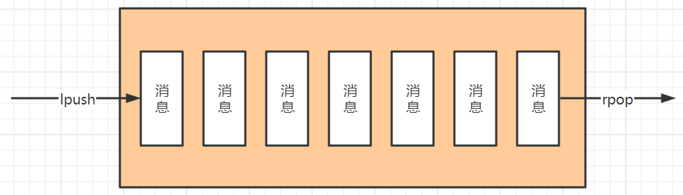

队列模式
利用list类型的lpush和rpop来实现消息队列，lpush用来发送消息，rpop用来取出消息

演示
1 | # 发送消息 |
注意事项
- 消息被取出后便会丢失
- 消息接收方不知道队列中是否有消息，如果一直发送rpop命令，会每一次都建立一次连接，建立连接的过程需要消耗一定的资源。可以使用brpop命令来取数据，在一定时间范围内如果没有取出数据会进入等待状态，直到时间结束，如果到时间结束还是没有取到数据则返回null
1 | # 等待时间的单位为秒 |
发布订阅模式
在发布订阅模式中，发布者不是计划发送消息给特定的订阅者，而是发布消息到不同的频道上，发布者不需要知道什么样的订阅者进行订阅。
订阅者可以对一个或多个频道感兴趣，而不需要知道是什么样的发布者进行发布的。
这种发布者和订阅者的解耦可以带来更大的扩展性和更加动态的网络拓扑。
订阅一个或多个频道
1 | 127.0.0.1:6379> subscribe first second |
向频道发送消息
1 | 127.0.0.1:6379> publish first hello |
订阅者收到消息
1 | 1) "message" |